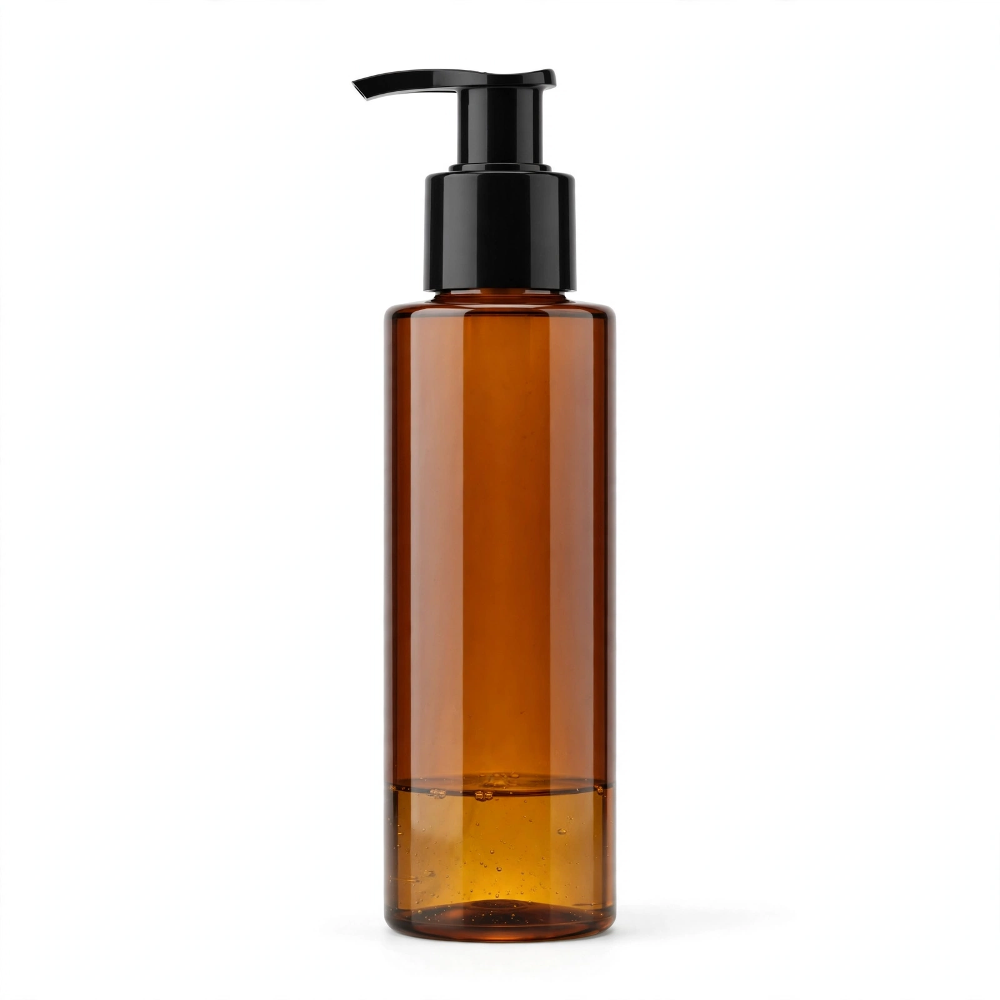

Marcas privadas · MOQ 1,000 unidades por SKU
¿Qué es aceite autobronceador de marca privada?
Un bronce controlado y sin mancha para marcas sin sol que quieren un héroe de verano limpio SKU. El aceite tintado se extiende uniformemente, construyendo un bronce natural sin parches o rayas naranjas, y el brillo gradual edificable permite a cada usuario controlar la profundidad de la piel del sol a la tanda profunda. Una de nuestras fórmulas listas - lanzarlo bajo su propia marca en MOQ 1,000 unidades, o personalizarlo con el equipo de fábrica. Esta es una fórmula de referencia: cada pedido se muestra y se personaliza a los requisitos de su marca — no hay productos estándar fuera de la plataforma.
- Formato
- Aceite de extracción
- Dirección clave
- bronce sin estrías, 50 g
- Mejor para
- Marcas con una historia de verano sin sol
- Paquete sugerido
- Botella, 50 g - confirmar por pedido
- MOQ
- 1,000 unidades por SKU
- Tiempo de arrendamiento
- Confirme por pedido
Sobre esta fórmula
Por qué las marcas comienzan desde esta fórmula
Un bronce controlado y sin mancha para marcas sin sol que quieren un héroe de verano limpio SKU. El aceite tintado se extiende uniformemente, construyendo un bronce natural sin parches o rayas naranjas, y el brillo gradual edificable permite a cada usuario controlar la profundidad de la piel del sol a la tanda profunda. Una de nuestras fórmulas listas — Esta es una fórmula de referencia: cada pedido se muestra y se personaliza a los requisitos de su marca — no hay productos estándar fuera de la plataforma.
Por qué las marcas eligen esta fórmula
- Bronceado sin rayas — un bronce controlado, libre de estrías, sin parches de naranja o rayas.
- Gradual brillo edificable — permite que cada usuario controle la profundidad de la piel del sol hasta el bronceado profundo.
- Aceite picado que se extiende uniformemente - construir un bronce natural.
- Botella, 50 g — el paquete sugerido es una botella de 50 g, confirmada por pedido.
Cómo las marcas lo usan
El producto héroe de una línea de verano sin sol; un complemento natural para las marcas que ya venden el cuidado del cuerpo de verano y quieren un paso auto-tanning; o el primer producto de bronceado de la gama de lanzamiento de una nueva marca.
Preguntas frecuentes
¿Este es un producto acabado que puedo pedir como es?
No. Esta es una fórmula de referencia. Empiezas de ella, personalizas con el equipo de fábrica, y apruebas una muestra antes de la producción a granel.
¿Cuál es la cantidad mínima de pedido?
1,000 unidades por SKU.
¿Puedo cambiar el formato de paquete?
Sí. El paquete sugerido es una botella de 50 g, y el formato de paquete se confirma por pedido. La lista completa del INCI y las concentraciones finales se confirman por pedido, y el precio se cotiza por pedido.
OEM final a extremo para tu marca
Lo que manejamos para tu marca
- Desarrollo de fórmulas — empezar de esta fórmula lista, o ajustar el nivel, la textura y la dirección de fragancia con el equipo de fábrica.
- Producción a granel — MOQ 1,000 unidades por SKU, con cheques de calidad en cada etapa.
- Marcas privadas — su logotipo y obras de arte en la botella, jarra, tubo o caja; obras de arte aprobadas antes de imprimir.
- Apoyo normativo — SGS ISO 22716 verificado; archivos específicos del mercado (EU CPSR / CPNP, US FDA / MoCRA, Halal) confirmados por pedido.
¿Se puede personalizar esta fórmula?
Sí. Comience de esta fórmula ofrecida como su referencia, luego personalizarla con el equipo de fábrica a los requisitos de su marca. De cualquier manera, aprueba una muestra antes de la producción a granel - ver cómo funciona el muestreo.
Qué enviar con su consulta
- Su mercado objetivo (UE, EE.UU., Oriente Medio o en otros lugares) - las necesidades de certificación difieren por mercado
- Formato de paquete y tamaño que prefiere
- Cantidad por SKU (MOQ 1,000)
La lista completa del INCI y las concentraciones finales se confirman por pedido. No se publica precio fijo; el precio se cotiza por pedido.
fórmulas relacionadas